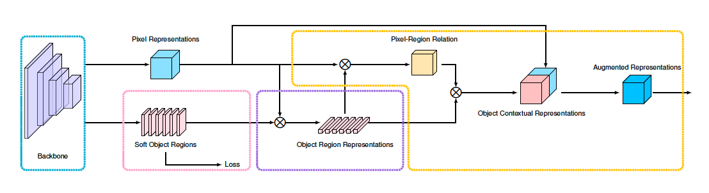

OCRNet¶
FCN（Fully Convolutional Network for Semantic Segmentation）可以对图像进行像素级的分类，解决了语义级别的图像分割问题，因此现有的大多数语义分割方法都基于FCN。但这些方法也有一定缺陷，比如分辨率低、上下文信息缺失和边界错误等。2020年，相关学者为解决语义分割上下文信息缺失难题，建设性地提出OCRNet，即基于物体上下文特征表示（Object Contextual Representation，以下简称OCR）的网络框架。其整体结构如下所示。实现此OCR方法需要经历三个阶段——首先形成软物体区域（Soft Object Regions），然后计算物体区域表示（Object Region Representations），最后得到物体上下文特征表示和上下文信息增强的特征表示（Augmented Representation）。 与其他语义分割方法相比，OCR方法更加高效准确。因为OCR方法解决的是物体区域分类问题，而非像素分类问题，即OCR方法可以有效地、显式地增强物体信息。从性能和复杂度来说，OCRNet也更为优秀。2020年，“HRNet + OCR + SegFix”版本在2020ECCV Cityscapes 获得了第一名。

OCRNet结构图
具体原理细节请参考Object-Contextual Representations for SemanticSegmentation。